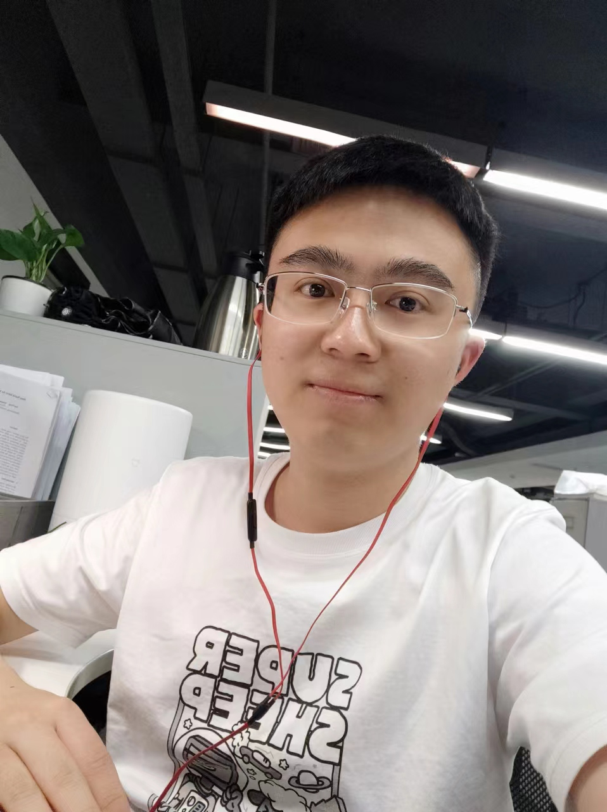

Ming-Liang Zhang (张明亮)
State Key Laboratory of Multimodal Artificial Intelligence Systems (MAIS), |
 |


About me
I am a AI PhD student at CASIA. My supervisor is Professor Cheng-Lin Liu.
My research interests include Mathmatical Question Answering, Multimodal Reasoning, Scene Parsing etc.
News
Education
Institute of Automation of Chinese Academy of Sciences (CASIA)
Sep. 2018 - Present
PhD in Pattern Recognition and Intelligent Systems
China, Beijing
Hefei University of Technology (HFUT)
Sep. 2014 - Jul. 2018
B.E. in Information and Computing Science
China, Hefei
Selected Publications
-
LANS: A Layout-Aware Neural Solver for Plane Geometry Problem
Ming-Liang Zhang, Zhong-Zhi Li, Fei Yin and Cheng-Lin Liu
Submitted to Preprint. [Paper]A Multi-Modal Neural Geometric Solver with Textual Clauses Parsed from Diagram
Ming-Liang Zhang, Fei Yin and Cheng-Lin Liu
Accepted by the 32nd International Joint Conference on Artificial Intelligence (IJCAI-23). [Paper][Code][Dataset]Learning to Understand Plane Geometry Diagram
Ming-Liang Zhang, Fei Yin, Yi-Han Hao and Cheng-Lin Liu
Accepted by the 2nd MATH-AI Workshop at NeurIPS 2022. [Paper][Video]Towards prior gap and representation gap for long-tailed recognition
Ming-Liang Zhang, Xu-Yao Zhang, Chuang Wang, Cheng-Lin Liu
Accepted by the Journal of Pattern Recognition. [Paper]PGDP5K: A Diagram Parsing Dataset for Plane Geometry Problems
Yihan Hao, Ming-Liang Zhang, Fei Yin and Lin-Lin Huang
Accepted by the 26th International Conference on Pattern Recognition (ICPR-22). [Paper]Plane Geometry Diagram Parsing
Ming-Liang Zhang, Fei Yin, Yi-Han Hao and Cheng-Lin Liu
Accepted by the 31nd International Joint Conference on Artificial Intelligence (IJCAI-22). [Paper][Code][Dataset][Video]
Selected Competition
-
CVPR 2020 workshop: AliProducts Challenge: Large-scale Product Recognition
Ming-Liang Zhang, Baole Wei and Yirong Yang
Team Name: UCASTAR
Ranking: 5 / 688 [Report][Code]CCF 2019 Big Data & Computing Intelligence Contest: ID Card Elements Extraction based on OCR
Ming-Liang Zhang, Baole Wei, Chen Du and Jingzhong Jiang
Team Name: 民间 baseline
Ranking: 5 / 1727 [Report]2017 America Mathematical Contest In Modeling (MCM)
Yujie Sun, Mingliang Zhang and Teng Sun
Faculty Advisor: Xianfa Jiao
Ranking: Meritorious Winner (for top 5% teams)
Experience
- Advisor: Lingyong Yan
Jun. 2023 - Sep. 2023, Beijing, China
Teaching Assistant | UCAS, School of Artificial Intelligence
- Advisor: Prof. Cheng-Lin Liu
Pattern recognition 22-23 Autumn, 081100M01001H
Sep. 2022 - Jan. 2023, Beijing, China
Internship | SenseTime AI Lab
- Advisor: Yichao Wu
Dec. 2021 - Feb. 2022, Beijing, China
Visiting Student | CASIA
- Advisor: Prof. Chunheng Wang
The State Key Laboratory of Management and Control for Complex Systems
Feb. 2018 - Jun. 2018, Beijing, China
Internship | Baidu Search Strategy Lab
Academic Service
Selected Honors